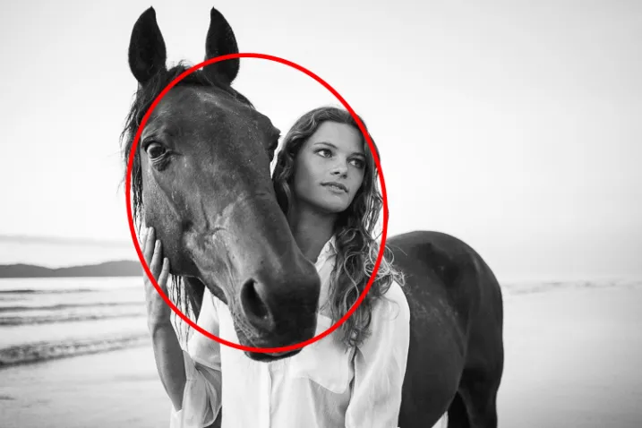
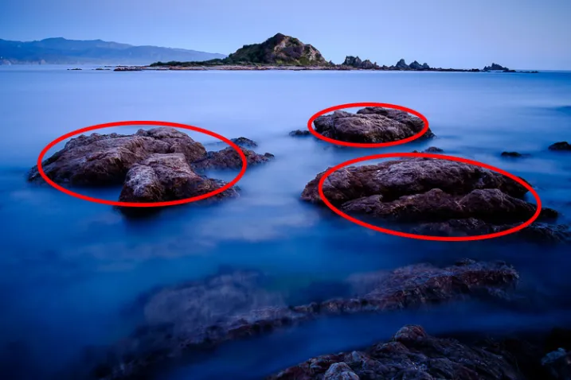
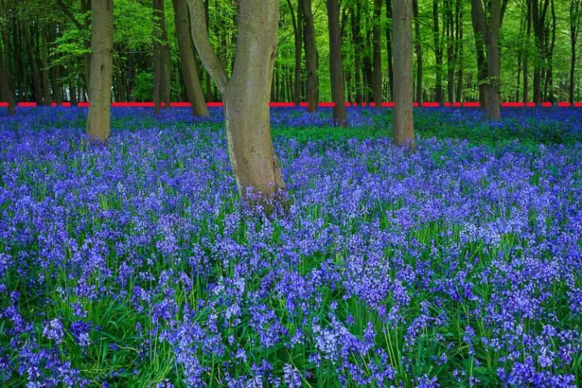
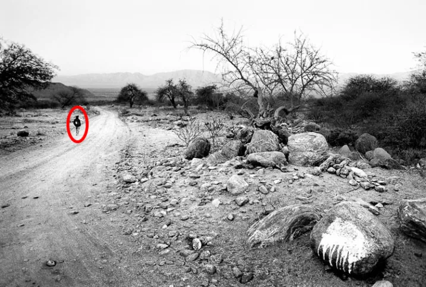
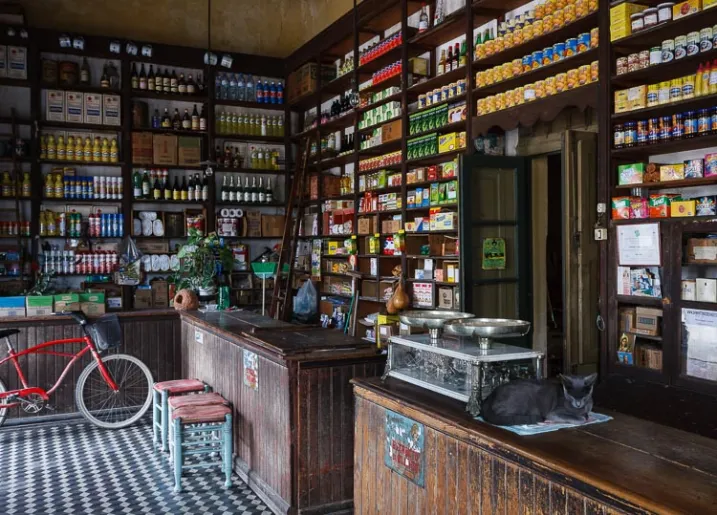
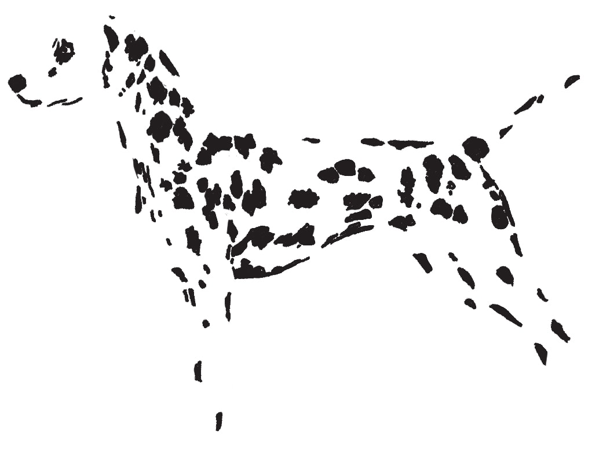

1. Definition
Gestalt psychology, gestaltism, or configurationism is a school of psychology and a theory of perception that emphasises the processing of entire patterns and configurations, and not merely individual components.
Gestalt psychology is often associated with the adage;
"The whole is greater than the sum of its parts".
It is interpreted as "pattern" or "configuration".
1.1. Aspects
1.1.1. Proximity

A pair or group of objects that are close to each other are more likely to be perceived as belonging together than if they are far apart.
1.1.2. Similarity

Objects that are similar in shape, size or colour are seen as belonging together.
1.1.3. Closure

The mind completes shapes that don’t exist. This is a principle used in some optical illusions but it also applies to photography. Part of the skill of composition is learning to recognize shapes, and building the design of the image around them. The principle of closure helps you see shapes in the subject.
1.1.6. Figure to Ground

For human figures to be recognizable they must stand out from the background. That way we can identify them easily even if they’re small in the frame. This is a useful principle because you can include small human figures in the landscape to indicate scale. But it is important that they don’t merge into the background, otherwise they are difficult to see.
1.1.7. Emergence

The viewer may not notice something in the photo when he first looks at it, but it becomes apparent after a period of study. This is an important concept because it is a way of making photos more interesting by presenting the viewer with something that is not evident at first, but reveals itself after reviewing the image. It’s a way of rewarding the viewer, and gives photos staying power.
3. Simon Ellingworth Gestalt Workshop
The pdf of the workshop is here.
3.1. Principles (as applied to photography)
3.1.1. Figure to Ground
-
depth of field
-
contrast
-
isolation
How do we differentiate the subject from the background,
and draw the eye immediately?
We dont' want ambiguity, the subject needs to be clear.
How do we achieve this?
We can do this by isolation, contrast, framing, filling the frame, and constructing a simple image.
Isolation
Similar but different; one of these objects is not the same as the others of the same type. Typical methods include:
-
Framing
-
fill the frame
-
simplicity
(with few objects in the picture, it’s obvious what the subject is)
| If there is a body of water in the image, and that isn’t your main subject, then use a long exposure to smooth it and make it less distracting. It can also provide a reflection of the subject to reinforce it. |
Remember that often less is more, craft images with no superfluous elements.
Previsualise; slow down and ask yourself "does it say what I want it to say?"
| An image with just one of these may not provide you with a good image; you still need moment. |
Of course we have exceptions like Saul Leiter’s raindrops on window type pictures, so the genre can dictate whether this is important or not. It might be an example of the "curiosity gap" where we are holding information back from the viewer, as you’re not sure what’s going on behind the raindrops. He said "there is a certain charm in discomfort and disorder, and a pleasant confusion can be sometimes satisfying".
In this image, we have confusion but we have a reality anchor in the form of the traffic light.
| There are images that can change during the time you look at them. They’re unusual in photography, they’re more likely graphic images; think the two faces/vase image. We call these stable or unstable images. |
3.1.2. Law of Similarity
Our eyes group together objects that are similar.
-
shape
-
colour cohesion
-
texture
-
pattern
We can build a simpler to understand message / narrative by
-
using it to identify/isolate the subject
-
imply the relationship with a similar object
-
inject humour
3.1.3. Law of Continuation
The viewer’s eye is taken beyond the subject & continue through the image, OR link an unfinished item.
The brain will "fill in" missing parts of a picture if it recognises a pattern.
Ideally it needs to lead somewhere that the viewer understands.
-
Planning a route though the image to a punchline
-
it allows things to exist outside our image, we can include less
-
creating playful images for the viewer
3.1.4. Law of Closure
Can be similar to continuation, but is defined as the mind’s ability to complete unfinished objects, provided there are enough clues for closure to occur. The mind "enjoys" completing the picture.
We can use
-
graphic elements
-
allowing things to exist outside our image; we can include less
-
playful images for the viewer

3.1.5. Proximity
Our minds group objects that are close to each other (c.f. grouping by similarity).
It’s very good for organising groups
We can use it to deliver a simpler to understand message, build narrative
-
include emotions such as intimacy, isolation, polarisation, etc. that link objects; not just physical proximity.
-
group for artistic effect
3.2. Notes
3.2.1. Where do people look first on an image?
Firstly, bright areas, then people/faces. However, a recent study has shown that with the ubiquity of "VDUs" nowadays, people tend to gravitate more towards the middle of the screen.
The largest brightest thing in the frame should be in focus. Of course there are exceptions; "rules are for those that don’t have artistic intent".
3.2.2. Miscellaneous tips
-
images need to consider moment, composition, and light
-
moment trumps all
-
one way of creating images is linking two items that wouldn’t/shouldn’t ordinarily be linked.
-
-
some area at the top/side of an image can provide "containment" that stops the image just drifting off out of the frame.
-
try to have links between the items in your image.
-
With landscape photography, the "moment" is often the weather.
-
Henry Cartier-Bresson: "Sharpness is a bourgeois concept"
-
go to a well known place, and try to show it differently.
-
who is your audience? (it might just be you)
-
if your image contains a staircase and a person, the person should be taking the first step.
-
There should be nothing in the image that doesn’t add value, or doesn’t support the "message".
-
However, objects in the frame that aren’t part of the key image may add "authenticity" to street photography and show that it wasn’t staged.
-
taking an image of a subject from within a room gives a different impression from taking it through a doorway. The latter can give a voyeuristic impression, or a privileged access feeling.
-
Small people in images will appear compressed, lonely, isolated.
-
when photographing people walking, ry to have their leading foot just coming down to the ground - this gives a little tension.
-
triangles - always good!
-
non-resolving images - where the image doesn’t explain everything.
-
position of camera;
-
rat’s eye view
-
cat’s eye view
-
dog’s eye view
-
3.3. Glossary
-
Curiosity gap
What’s going on in the image? It doesn’t tell you -
stable and unstable images
these are images that can change during the time you look at them. Unusual for photography, more likely graphic images; think the two faces/vase image. -
fred herzog - timing in photography is almost everything